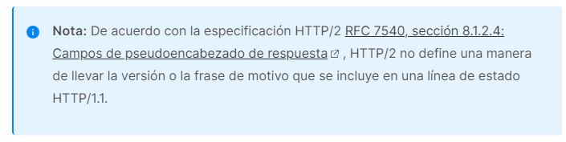

XMLHttpRequest
XMLHttpRequestLos objetos (XHR) se utilizan para interactuar con los servidores. Puede recuperar datos de una URL sin tener que actualizar toda la página. Esto permite que una página web actualice solo una parte de la página sin interrumpir lo que está haciendo el usuario.
A pesar de su nombre, XMLHttpRequestse puede utilizar para recuperar cualquier tipo de datos, no sólo XML.
Si su comunicación requiere recibir datos de eventos o mensajes de un servidor, considere la posibilidad de utilizar eventos enviados por el servidor a través de la EventSourceinterfaz. Para una comunicación full-duplex, WebSockets puede ser una mejor opción.
Constructor
XMLHttpRequest() El constructor inicializa un método XMLHttpRequest. Debe llamarse antes de cualquier otra llamada de método.
Propiedades de instancia
Esta interfaz también hereda las propiedades de XMLHttpRequestEventTargety de EventTarget.
XMLHttpRequest.readyState
Devuelve un número que representa el estado de la solicitud.
XMLHttpRequest.response
Devuelve un ArrayBuffer, un Blob, un Document, un objeto JavaScript o una cadena, según el valor de XMLHttpRequest.responseType, que contiene el cuerpo de la entidad de respuesta.
XMLHttpRequest.responseText
Devuelve una cadena que contiene la respuesta a la solicitud como texto, o nullsi la solicitud no tuvo éxito o aún no se ha enviado.
XMLHttpRequest.responseType
Especifica el tipo de respuesta.
XMLHttpRequest.responseURL
Devuelve la URL serializada de la respuesta o la cadena vacía si la URL es nula.
XMLHttpRequest.responseXML
Devuelve un Documentque contiene la respuesta a la solicitud, o nullsi la solicitud no se realizó correctamente, aún no se envió o no se puede analizar como XML o HTML. No disponible en Web Workers .
XMLHttpRequest.status
Devuelve el código de estado de respuesta HTTP de la solicitud.
XMLHttpRequest.statusText
Devuelve una cadena que contiene la cadena de respuesta devuelta por el servidor HTTP. A diferencia de XMLHttpRequest.status, esto incluye el texto completo del mensaje de respuesta (" OK", por ejemplo).

XMLHttpRequest.timeout
El tiempo en milisegundos que puede tardar una solicitud antes de finalizar automáticamente.
XMLHttpRequest.upload
A XMLHttpRequestUploadrepresenta el proceso de carga.
XMLHttpRequest.withCredentials
Devuelve truesi las solicitudes entre sitios Access-Controldeben realizarse utilizando credenciales como cookies o encabezados de autorización; de lo contrario false, .
Propiedades no estándar
XMLHttpRequest.channel
El canal utilizado por el objeto al realizar la solicitud
XMLHttpRequest.mozAnon
Un valor booleano. Si es verdadero, la solicitud se enviará sin encabezados de autenticación ni cookies.
XMLHttpRequest.mozSystem
Un valor booleano. Si es verdadero, no se aplicará la misma política de origen en la solicitud.
XMLHttpRequest.mozBackgroundRequest
Un valor booleano que indica si el objeto representa o no una solicitud de servicio en segundo plano.
Métodos de instancia
XMLHttpRequest.abort()
Aborta la solicitud si ya ha sido enviada.
XMLHttpRequest.getAllResponseHeaders()
Devuelve todos los encabezados de respuesta, separados por CRLF , como una cadena, o nullsi no se ha recibido respuesta.
XMLHttpRequest.getResponseHeader()
Devuelve la cadena que contiene el texto del encabezado especificado, o nullsi aún no se ha recibido la respuesta o el encabezado no existe en la respuesta.
XMLHttpRequest.open()
Inicializa una solicitud.
XMLHttpRequest.overrideMimeType()
Anula el tipo MIME devuelto por el servidor.
XMLHttpRequest.send()
Envía la solicitud. Si la solicitud es asincrónica (que es la opción predeterminada), este método retorna tan pronto como se envía la solicitud.
XMLHttpRequest.setAttributionReporting()
Indica que desea que la respuesta de la solicitud pueda registrar una fuente de atribución o un evento desencadenador.
XMLHttpRequest.setRequestHeader()
Establece el valor de un encabezado de solicitud HTTP. Debe llamar setRequestHeader()después de open(), pero antes de send().
Eventos
abort
Se activa cuando se canceló una solicitud, por ejemplo, porque el programa llamó a XMLHttpRequest.abort(). También está disponible a través de la onabortpropiedad del controlador de eventos.
error
Se activa cuando la solicitud detecta un error. También está disponible a través de la onerrorpropiedad del controlador de eventos.
load
Se activa cuando una XMLHttpRequesttransacción se completa correctamente. También está disponible a través de la onloadpropiedad del controlador de eventos.
loadend
Se activa cuando se completa una solicitud, ya sea de manera exitosa (después de load) o sin éxito (después de aborto error). También está disponible a través de la onloadendpropiedad del controlador de eventos.
loadstart
Se activa cuando una solicitud ha comenzado a cargar datos. También está disponible a través de la onloadstartpropiedad del controlador de eventos.
progress
Se activa periódicamente cuando una solicitud recibe más datos. También está disponible a través de la onprogresspropiedad del controlador de eventos.
readystatechange
Se activa siempre que cambia la readyStatepropiedad. También está disponible a través de la onreadystatechangepropiedad del controlador de eventos.
timeout
Se activa cuando se termina el progreso debido a que se vence el tiempo predeterminado. También está disponible a través de la ontimeoutpropiedad del controlador de eventos.